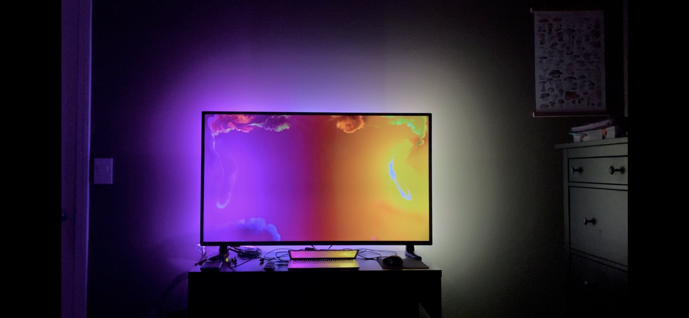
Here is all the documentation for the final project!
I created a dynamic TV backlight for a more engaging watching
experience!
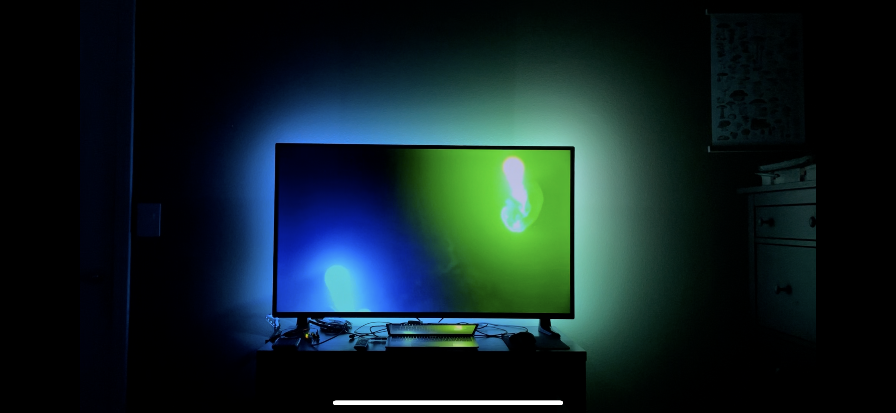
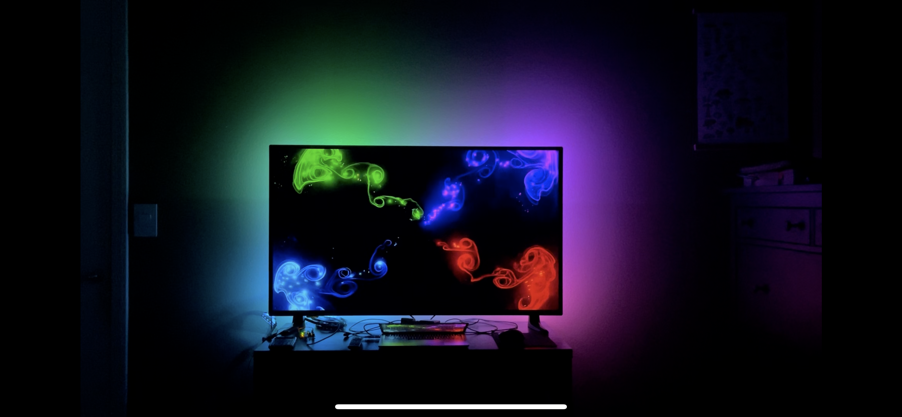
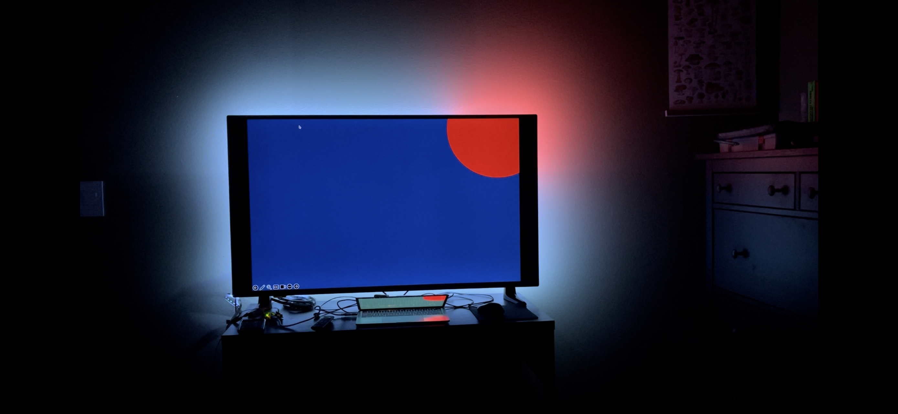
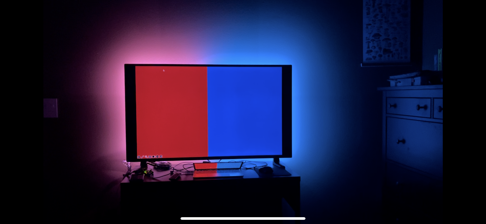
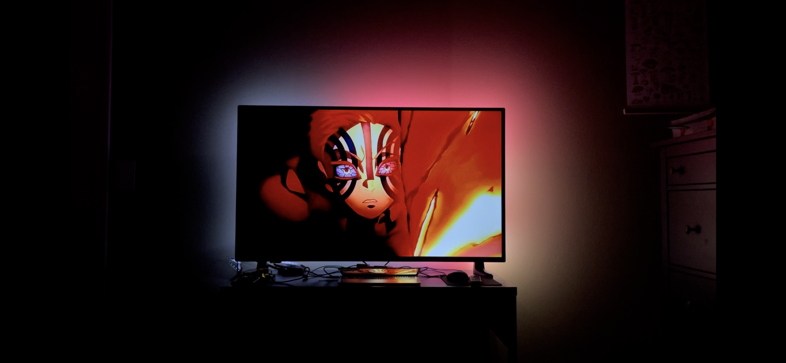
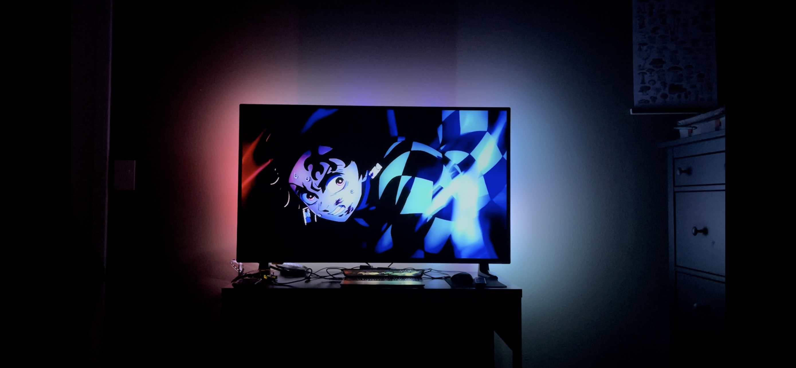
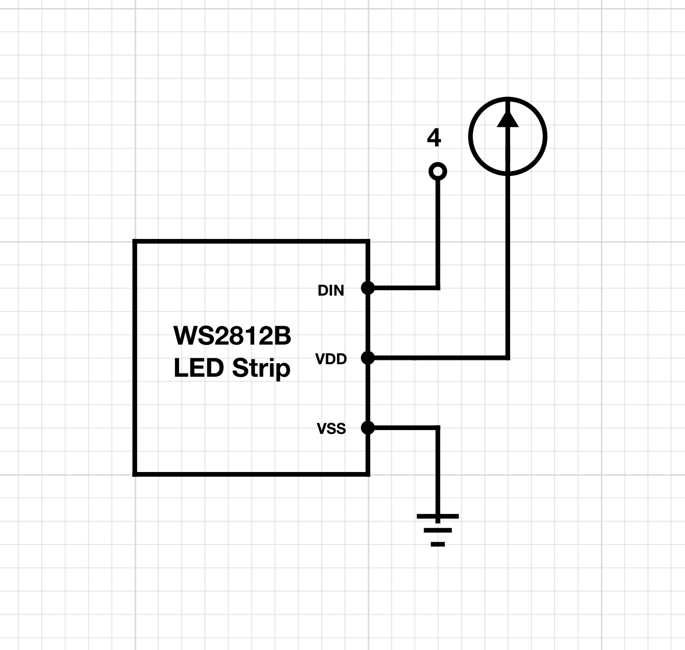
Circuit schematic
Circuit components
Arduino Uno R3 microcontroller
Aligator clips
Addressable LED strip from amazon - https://a.co/d/jfU2dPp
Laptop
50 inch television
Arduino Libraries
FastLED → to set the colors of the LED strips
Python Libraries
MSS → to capture screenshots very fast
OpenCv library → to display live footage and save it (helps troubleshooting)
PySerial → serial communication
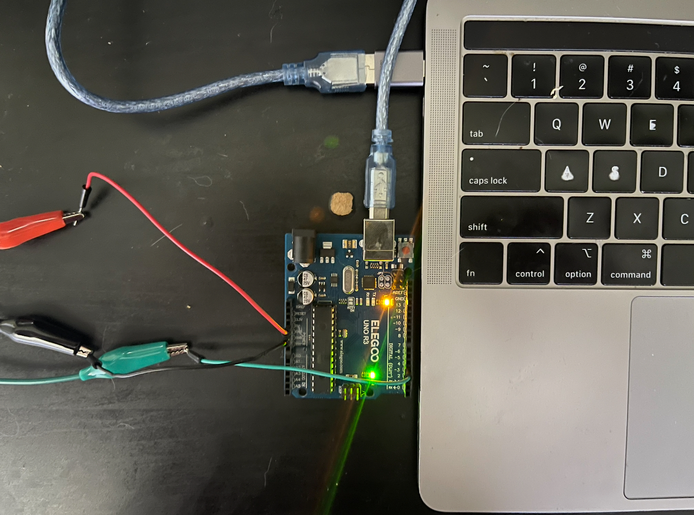
Circuit image - arduino micro controller
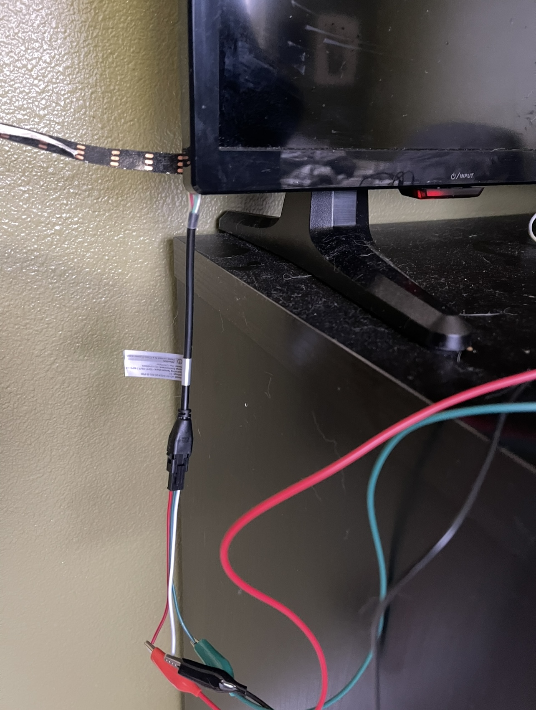
Circuit image - LED strip connection
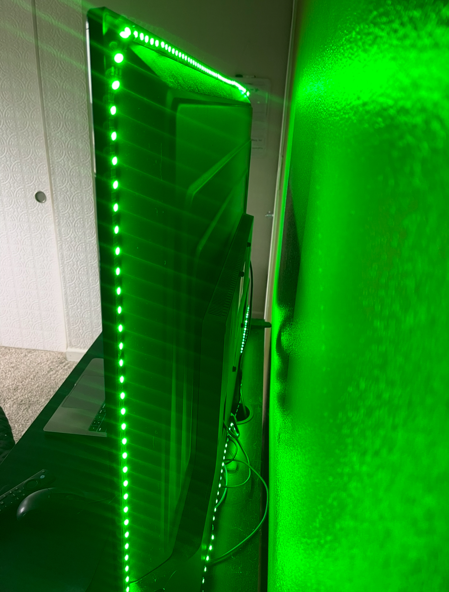
Circuit image - LED strip mounted on back of TV
Arduino Code
#include < FastLED.h > // import fast LED library
#define NUM_LEDS 216 // set this equal to the [number of bytes python sends] divided by [3 bytes (rgb value)] times [resolution]; approximately 215 LEDs around TV;
#define LED_PIN 4 // data pin connected to LED strip
CRGB leds[NUM_LEDS]; //initialize array of CRGB values
const int NUM_PIXELS = 72; // Must match Python's data length (number of bytes python sends divided by 3)
const int RESOLUTION = 3; // equals to total LEDS / number of pixels
const int DATA_LENGTH = NUM_PIXELS * 3; // length of the buffer array
// Buffer to hold the incoming raw RGB data (R1, G1, B1, R2, G2, B2, ...)
byte rgb_data[DATA_LENGTH];
void setup() {
Serial.begin(115200); // serial begin baud = 115200
Serial.println("Arduino Ready for RGB data."); // notify arduino ready to receive
FastLED.addLeds< WS2812B, LED_PIN, GRB >(leds, NUM_LEDS); // configure WS2812B LED strip with leds array defined earlier
FastLED.setBrightness(250); // set brightness of led strip
}
void loop() {
if (Serial.available()) { // if data recieved
int bytes_read = Serial.readBytesUntil('S', (char*)rgb_data, DATA_LENGTH); // read bytes until end character 'S' -> store bytes in buffer array created earlier
if (bytes_read == DATA_LENGTH) { // if rgb_data array completely filled (i.e., received all pixels * 3)
Serial.print("Received "); // notify received
Serial.print(bytes_read);
Serial.println(" bytes!");
// currently only able to every 3rd LED (72 LEDs total) without overloading the arduino -> the result is still very immersive!
// ill see if theres another function i could use using the fast LED library to set multiple leds at the same time instead of one at a time
for (int i = 0; i< NUM_PIXELS; i++) { // iterate from 0 to NUM_PIXELS-1
int cur_rgb = i*3;
leds[i*RESOLUTION].red = rgb_data[cur_rgb + 2]; // set red value of current LED (position = loop * resolution)
leds[i*RESOLUTION].green = rgb_data[cur_rgb + 1]; // set blue value of current LED (position = loop * resolution)
leds[i*RESOLUTION].blue = rgb_data[cur_rgb]; // set green value of current LED (position = loop * resolution)
}
FastLED.show(); //once all LEDs have been set, turn on
}
}
}
Python Code Snippet
import cv2
import numpy as np
import mss
import time
import pprint
import serial
# 215 LEDS with exactly around perimeter of TV
NUM_LEDS = 72 # number of pixels (led strip) used
WIDTH = 1440 # width of laptop screen
HEIGHT = 900 # height of laptop screen
PERIMETER = WIDTH * 2 + HEIGHT * 2 # perimeter = 4680
pixelsPerLED = int(PERIMETER / NUM_LEDS) # get number pixels (resolution) per led
# --- Configuration ---
# Define the area of the screen to capture (a 1440x900 box starting at coordinate 0, 0)
monitor = {"top": 0, "left": 0, "width": WIDTH, "height": HEIGHT}
# Define the output resolution (must match the capture area size)
capture_resolution = (monitor["width"], monitor["height"])
# Specify a reliable video codec and output filename
codec = cv2.VideoWriter_fourcc(*"MJPG")
filename = "mss_recording.avi"
fps = 30.0 # Target Frames Per Second
# Initialize the VideoWriter
out = cv2.VideoWriter(filename, codec, fps, capture_resolution)
# Check if the VideoWriter initialized correctly
if not out.isOpened():
print("Error: VideoWriter not initialized correctly.")
exit()
# Optional: Set up a live display window
cv2.namedWindow("Live Recording (mss)", cv2.WINDOW_NORMAL)
cv2.resizeWindow("Live Recording (mss)", 1280, 800)
print(f"Starting recording with mss at {fps} FPS. Press 'q' to stop.")
# --- Recording Loop ---
# Use 'with mss.mss()' to manage the screen capture resource efficiently
try:
ser = serial.Serial(
"/dev/cu.usbmodem14101", 115200, timeout=1
) # Adjust COM port and baud rate as needed
time.sleep(2) # Allow time for the serial port to open
print("Connection established.")
with mss.mss() as sct:
while True:
# intialize empty array every loop to store rgb values
leds = []
# Get raw pixels from the screen fast
sct_img = sct.grab(monitor)
# Convert to a NumPy array
frame = np.array(sct_img)
# get left led strip
# need to go from bottom to top
for i in range(HEIGHT, 0, -1):
if i % pixelsPerLED == 0: # add 1 for rounding error
# ser.write(bytearray(frame[i][0][0:3]))
leds.append(frame[i][0][0])
leds.append(frame[i][0][1])
leds.append(frame[i][0][2])
# get top led strip
# got from left to right
for i in range(WIDTH):
if i % pixelsPerLED == 0: # add 1 for rounding error
# ser.write(bytearray(frame[0][i][0:3]))
leds.append(frame[0][i][0])
leds.append(frame[0][i][1])
leds.append(frame[0][i][2])
# get right led strip
# go from top to bottom
for i in range(HEIGHT):
if i % pixelsPerLED == 0:
leds.append(frame[i][1439][0])
leds.append(frame[i][1439][1])
leds.append(frame[i][1439][2])
# # get bottom led strip
# need to go from right to left
for i in range(WIDTH, 0, -1):
if i % pixelsPerLED == 0:
leds.append(frame[899][i][0])
leds.append(frame[899][i][1])
leds.append(frame[899][i][2])
# Convert the list of integers into a byte string
# bytearray() is perfect for this, expecting an iterable of ints 0 <= x < 256
binary_data = bytearray(leds)
# define end marker, makes it easier for arduino to read full array
END_MARKER = b"S"
# Send the binary data
ser.write(binary_data)
# send end marker
ser.write(END_MARKER)
print(
f"PYTHON -> Sent marker and {len(binary_data)} bytes of RGB data for {int(len(binary_data)/3)} LEDs."
)
# read any data printed in arduino -> used for troubleshooting
if ser.in_waiting > 0:
data_line = ser.readline().decode("utf-8").strip()
if data_line:
print(f"ARDUINO -> {data_line}")
# Convert the raw BGRA image (default for mss) to BGR for OpenCV
frame = cv2.cvtColor(frame, cv2.COLOR_BGRA2BGR)
# print(len(frame), len(frame[0]))
# Write the frame to the output file
out.write(frame)
# Show the frame in the live window (optional)
cv2.imshow("Live Recording (mss)", frame)
# Stop recording when the user presses 'q'
if cv2.waitKey(1) == ord("q"):
break
except serial.SerialException as e:
print(f"Serial error: {e}")
except KeyboardInterrupt:
print("Program terminated by user.")
finally:
if ser and ser.is_open:
ser.close()
print("Serial port closed.")
# --- Cleanup ---
out.release()
cv2.destroyAllWindows()
print(f"Recording finished and saved as {filename}")
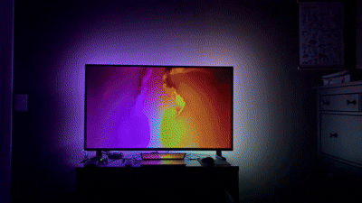
Demo - Goove Test (popular commercial brand)
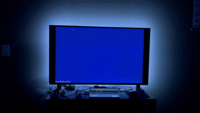
Demo - I created my own test
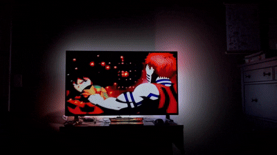
Demo - Testing with media